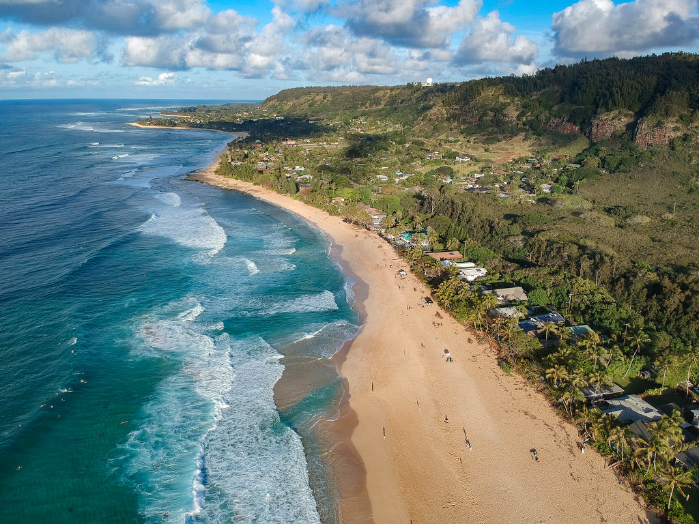
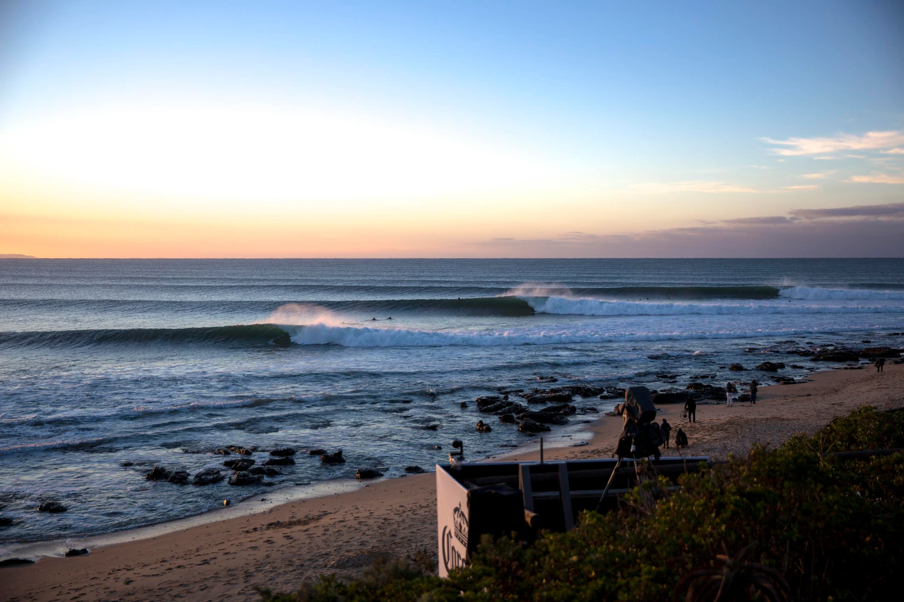
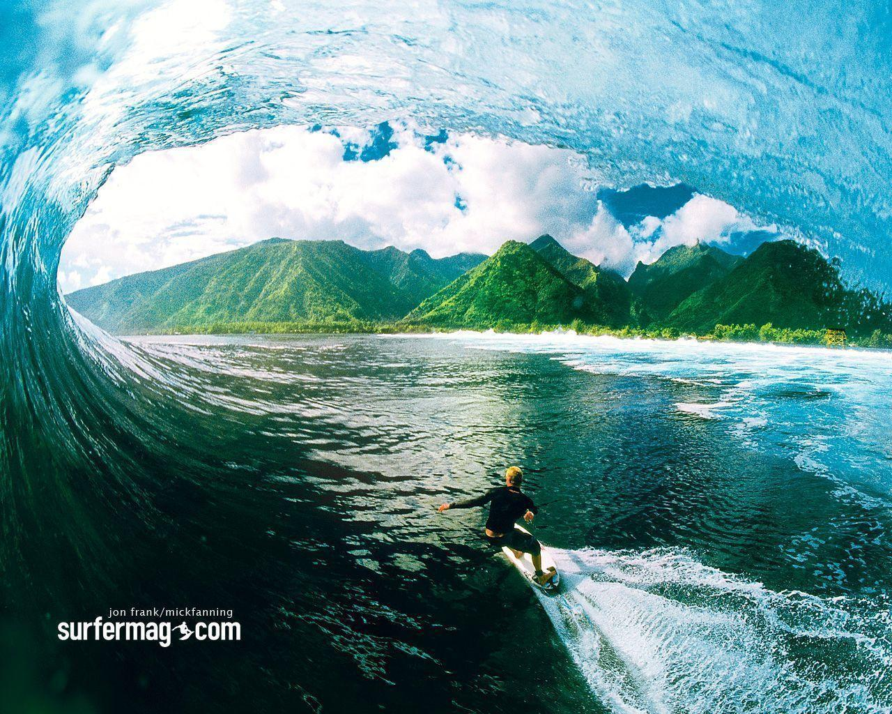
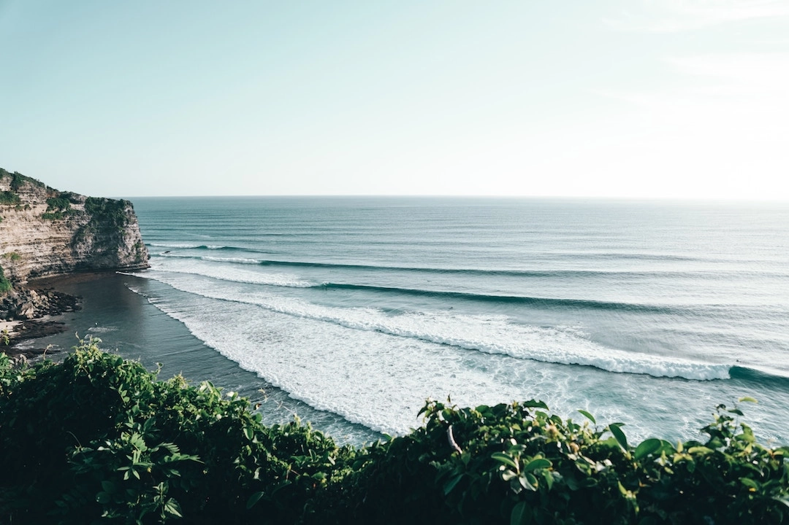
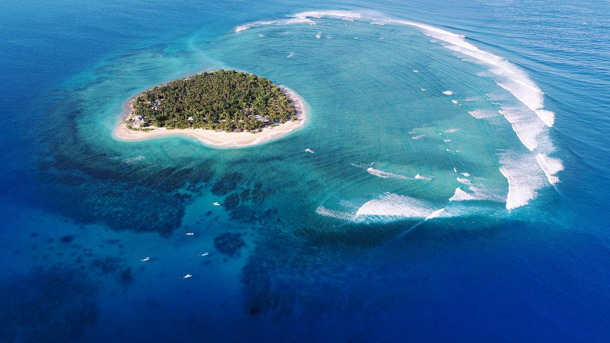
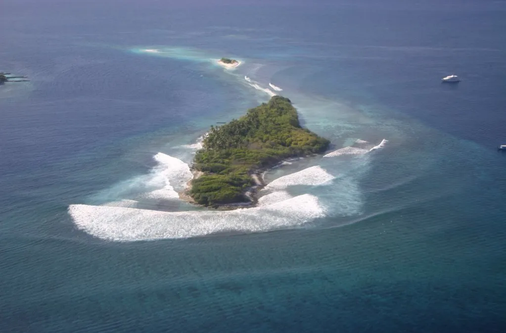
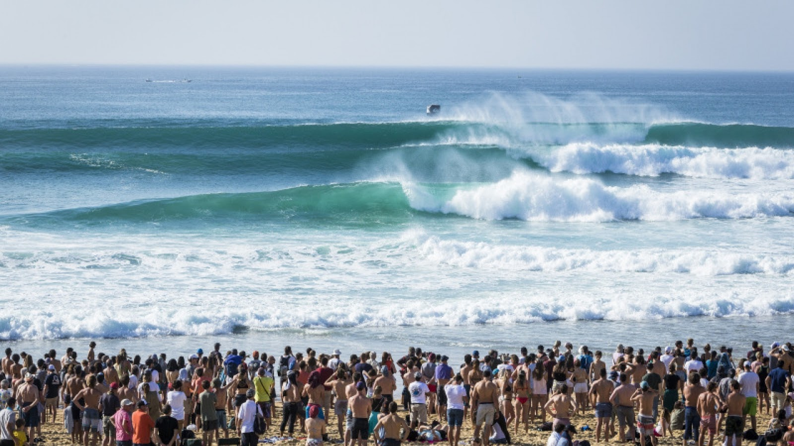
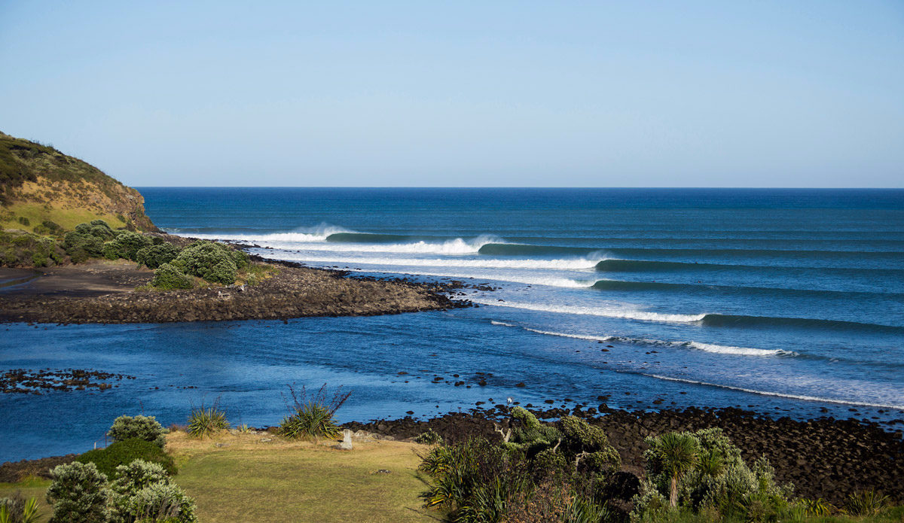
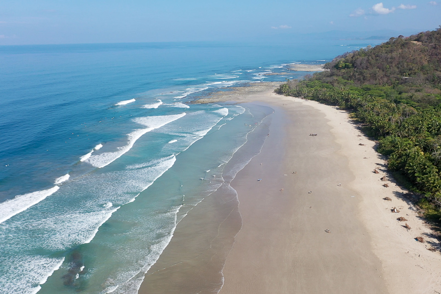

Spots de temporada
-
Pipeline, Hawái, Estados Unidos
Pipeline es considerado uno de los lugares más icónicos para surfear en el mundo. Se encuentra en la costa norte de Oahu y es famoso por sus olas tubulares de clase mundial, que pueden alcanzar alturas impresionantes. Las rompientes en Pipeline ofrecen emociones extremas y desafíos para surfistas experimentados, convirtiéndolo en un destino de referencia en el mundo del surf.
 -
Jeffreys Bay, Sudáfrica
Situada en la costa este de Sudáfrica, Jeffreys Bay es conocida por sus olas perfectas y su entorno natural impresionante. La ola más famosa, conocida como "Supertubes," ofrece largos paseos y tubos perfectos, lo que la convierte en un destino soñado para los surfistas. Además de la calidad del surf, la ciudad ofrece una comunidad surfista vibrante y un ambiente relajado.
 -
Teahupo'o, Tahití
Teahupo'o es famoso por sus olas enormes y poderosas que rompen sobre un arrecife de coral. Las condiciones en Teahupo'o pueden ser desafiantes y solo los surfistas más valientes se aventuran en sus tubos masivos. Este destino es un paraíso para quienes buscan emociones fuertes en un entorno natural impresionante.
 -
Uluwatu, Bali, Indonesia
Bali es una isla paradisíaca para el surf, y Uluwatu es uno de los puntos más destacados. Ofrece olas rápidas y tubulares en una costa rocosa y escarpada. Además del surf de calidad, Uluwatu cuenta con una animada escena nocturna y hermosos acantilados que crean un entorno impresionante.
 -
Tavarua, Fiyi
Tavarua es una isla privada que alberga la famosa ola Cloudbreak. Cloudbreak es conocida por sus enormes olas, tubos perfectos y condiciones consistentes a lo largo del año. Este destino de ensueño atrae a surfistas de élite de todo el mundo en busca de aventuras extremas en el océano.
 -
Maldivas
Este conjunto de islas en el océano Índico ofrece una amplia variedad de olas de calidad, desde olas suaves y adecuadas para principiantes hasta olas más desafiantes para surfistas experimentados. Lo que hace que las Maldivas sean especiales es la oportunidad de surfear en aguas cristalinas y disfrutar de una experiencia única en un entorno tropical paradisíaco.
 -
Hossegor, Francia
Hossegor es famoso por sus rompientes de playa y su ambiente relajado en la costa atlántica francesa. Es un lugar emblemático para los surfistas europeos, con olas de calidad y una comunidad surfista activa. Además del surf, Hossegor ofrece una vida nocturna animada y una cultura costera única.
 -
Raglan, Nueva Zelanda
Conocido como el "Byron Bay de Nueva Zelanda", Raglan ofrece excelentes olas y una comunidad surfista amigable. La ola principal, llamada "Manu Bay," es famosa por ser una de las izquierdas más largas del mundo. Raglan combina surf de calidad con un ambiente relajado y una belleza natural impresionante.
 -
Santa Teresa, Costa Rica
Este rincón del paraíso costarricense combina selva tropical, playas vírgenes y olas consistentes para surfear. Santa Teresa es un destino cada vez más popular entre los surfistas que buscan una experiencia de surf en un entorno natural exuberante. Además del surf, la zona ofrece actividades de aventura y una vida nocturna vibrante.
